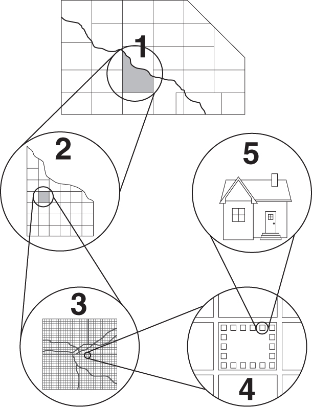
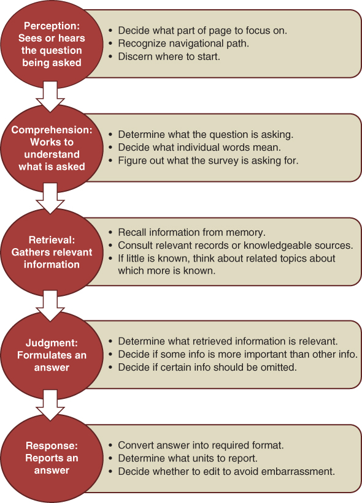
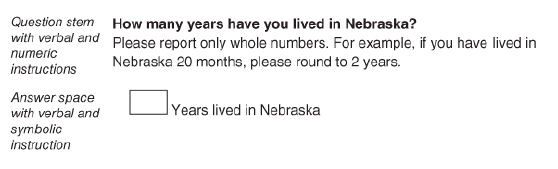
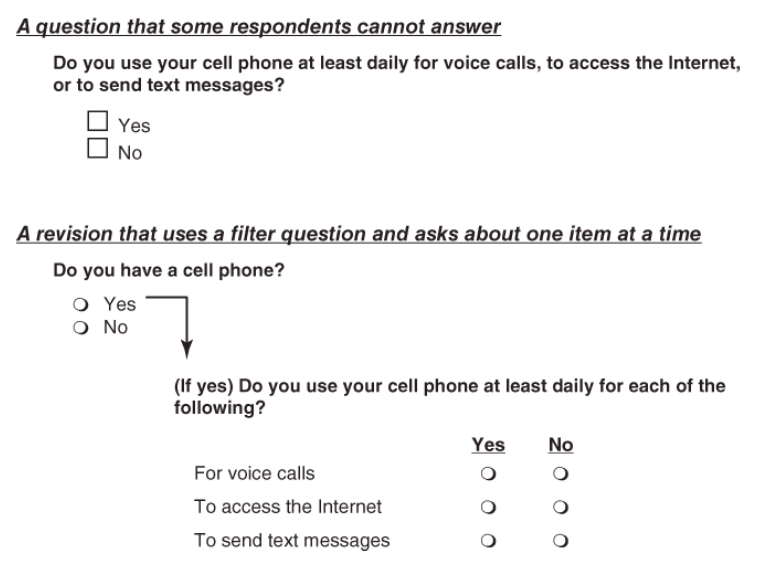
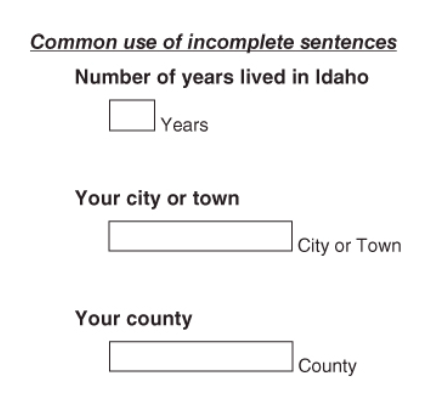
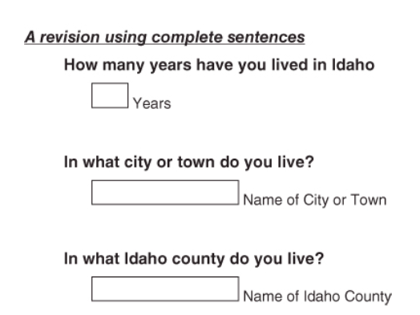
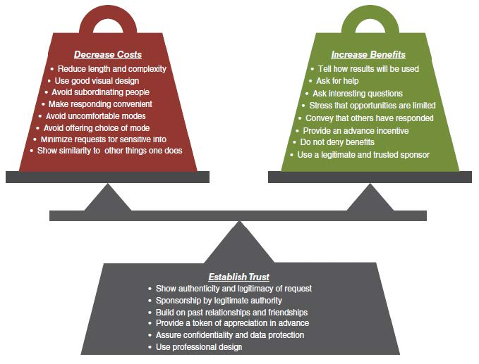

Distribution and Fundamentals of Instrument Design
Large sample fallacy
With web surveys, it is easy to get a large sample, but that does not mean it is a representative sample!!

Interviewer Influence?
How can the presence of interviewers affect responses on individual questions?
Positives:
Issues:
social desirability: people want to make a good impression in a social interaction
acquiescence: tendency to agree with someone
both present in self-administered surveys, but stronger with interviewer administered
Instrument is key
Designing a good instrument can help combat some of these issues!
Note
🧠 Consider what the questions, questionnaire, contact, etc. will look like from the respondent’s perspective 🧠


Guideline 4.1
Choose the appropriate question format
Guideline 4.2
Make sure the question applies to the respondent
Guideline 4.3
Ask one question at a time.

Guideline 4.4
Make sure the question is technically accurate
Guideline 4.5
Use simple and familiar words
Guideline 4.6
Use specific and concrete words to specify the concepts clearly
Original: How many times did you eat together as a family last week?
Revision 1: How many meals did you eat together as a family at home last week?
Revision 2: How many meals did you sit down to eat at home as a family last week?
_______ Meals
Guideline 4.7
Use as few words as possible to pose the question
Original: How many people were living or staying at this residence on Saturday, March 3rd, 2000? To make sure each person in the United States is counted only once, it is very important to: …
Revision: How many people were living or staying at this residence on Saturday, March 3rd, 2000? Please: …
Guideline 4.8
Use complete sentences that take a question form, and use simple sentence structures


Guideline 4.9
Make sure “yes” means yes and “no” means no
Double-Negative
Do you favor or oppose not allowing the state to raise taxes without approval of 60% of voters?
⃝ Favor
⃝ Oppose
Revision 1
Do you favor or oppose requiring 60% approval by voters in order to raise state taxes?
⃝ Favor
⃝ Oppose
Revision 2
In the September election you will be asked to vote on this referendum: “No state tax can be raised without approval by 60% of those voting in a statewide election.” If the election were held today, would you vote for or against approval?
⃝ For
⃝ Against
Guideline 4.10
Organize questions in a way to make it easier for respondents to comprehend the response task.
Repetitive & Interrupting
Are you very likely, somewhat likely, somewhat unlikely, or very unlikely to visit Yellowstone National Park again?
⃝ Very likely
⃝ Somewhat likely
⃝ Somewhat unlikely
⃝ Very unlikely
Revision
How likely or unlikely are you to visit Yellowstone National Park again?
⃝ Very likely
⃝ Somewhat likely
⃝ Somewhat unlikely
⃝ Very unlikely
